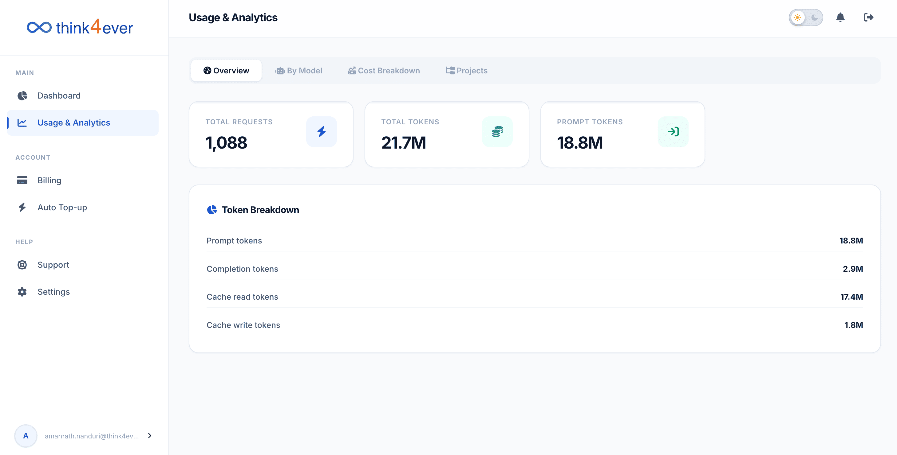

Usage & Analysis
The Usage & Analytics section provides a detailed breakdown of your platform utilization, token consumption, and transactional metrics. This screen helps you audit costs and understand exactly how your AI agents are consuming system resources.

Sub-Tab Navigation Bar
Located at the top of the workspace, these tabs allow you to toggle between different analytical views:
- Overview (Current View): A high-level dashboard summarizing volume metrics and overall token balances.
- By Model: Breaks down consumption data based on the specific AI model engines processing your requests.
- By Model: Breaks down consumption data based on the specific AI model engines processing your requests.
- Cost Breakdown: Translates token usage into actual financial expenditures based on your billing tier.
- Projects: Segregates usage metrics by individual active workspaces or development branches.
High-Level Summary Cards
This interactive data table itemizes execution metrics segmented by individual development environments inside the selected tracking window:
Daily Usage Time-Series Chart
The top metrics section highlights cumulative totals for quick monitoring:
- Total Requests: The aggregate number of execution calls or tasks initiated across your pipelines (e.g., 797 requests).
- Total Tokens: The combined volume of processing units used by the system (e.g., 19.5M tokens). This includes input, output, and cached context.
- Prompt Tokens: The standalone volume of input data sent to the models (e.g., 18.3M tokens), indicating the heavy baseline processing of instructions, documentation, and system state rules.
Token Breakdown Module
This card explicitly itemizes how your total tokens are distributed during execution loops:
| Token Type | Metric Volume | Functional Purpose |
|---|---|---|
| Prompt tokens | 18.3M | Represents the raw input instructions, system architectures, and engineering requirements parsed by the AI models. |
| Completion tokens | 1.2M | Represents the actual output generated by your AI agents (e.g., code, generated text, or processed system steps). |
| Cache read tokens | 10.9M | Represents previously processed context that was successfully retrieved from memory. High values here mean the system is optimizing efficiency and saving costs by avoiding redundant processing. |
| Cache write tokens | 381.6K | Tracks new, reusable contextual data written into the platform's cache infrastructure to accelerate subsequent agent tasks. |